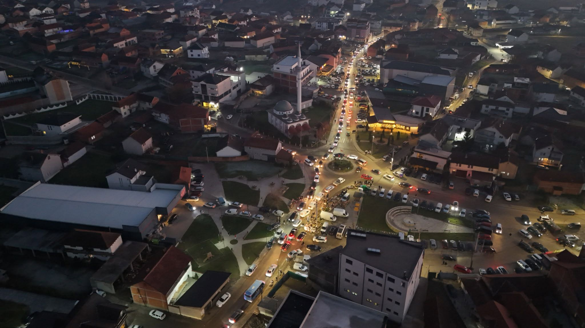
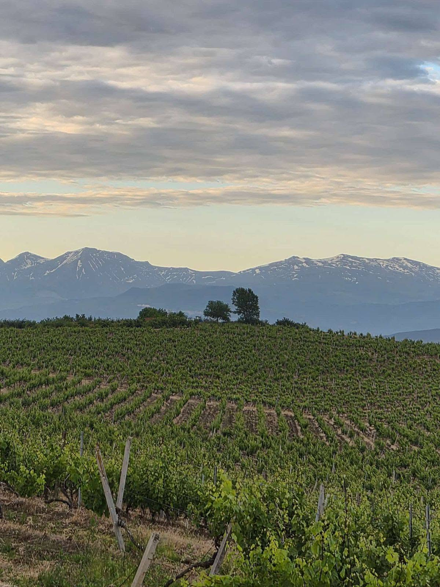
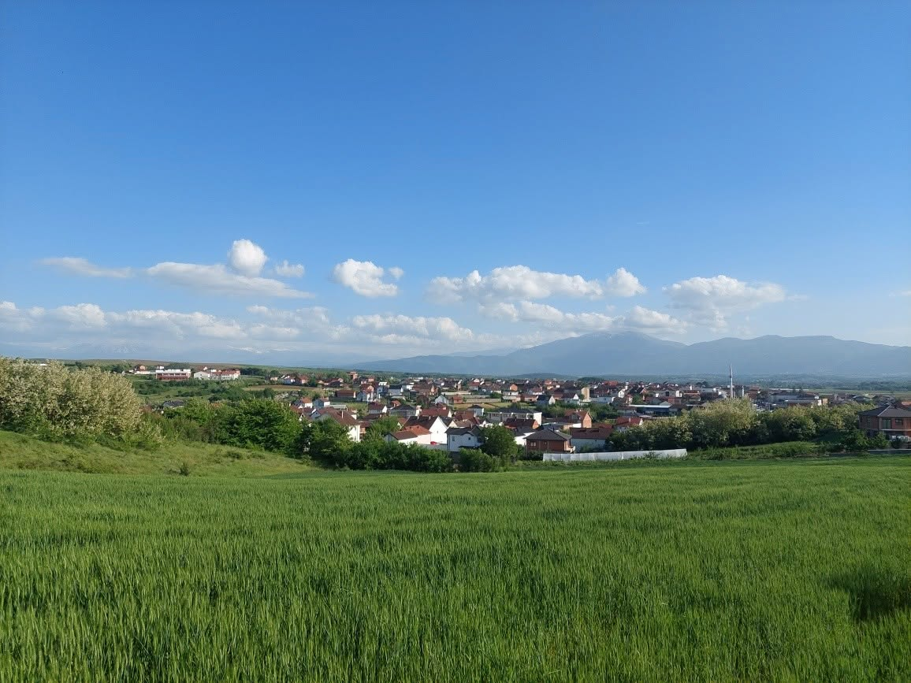

Historia dhe identiteti
Ratkoci është një fshat me rrënjë të thella në historinë e krahinës së Rahovecit, ku koha dhe tradita kanë formuar një komunitet të fortë dhe të lidhur me tokën.
Mirë se vini në
Një vend i qetë, me bukuri natyrore, tradita të gjalla dhe njerëz që ruajnë identitetin e komunitetit të Rahovecit.
Shiko fototPërshkrim
Ratkoci është një fshat me rrënjë të thella në historinë e krahinës së Rahovecit, ku koha dhe tradita kanë formuar një komunitet të fortë dhe të lidhur me tokën.
Fushat dhe pamjet e hapura e bëjnë këtë vend të bukur për pushime, shëtitje dhe vlerësim të natyrës së gjallë të rajonit.
Qytetaria dhe familjet e këtij fshati vazhdojnë të mbajnë shoqërinë, punën dhe zakonet lokale me krenari dhe respekt për të kaluarën.
Foto




Informacione
Ratkoci ndodhet në zonën e Rahovecit, në një rajon ku fusha, bjeshkët dhe tradita bashkohen në një ambient të veçantë.
Fshati mbetet një shembull i ndërtimit të komunitetit me kujdes për tokën, kulturën dhe familjet lokale.
Festimet, bisedat e vjetra, punët e tokës dhe lidhja me familjet janë pjesë e identitetit të këtij vendi.
Është një vend i përshtatshëm për ata që duan të shohin një anë më autentike të jetës rurale të Rahovecit.